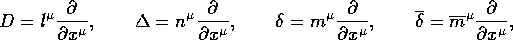

The four Newman-Penrose operators require the existence of the connection object and operate on algebraic expressions. They are defined as follows: <<2195>

The REDTEN functions npD(), npDEL(), npdel(), and npdelc() implement each of the operators, respectively. For example,
#: npD(th*sin(r));
sqrt(2) cos(r) th
-------------------
2
#: npDEL(th*sin(r));
- sqrt(2) cos(r) delta th
----------------------------
____
4 rhob rhob
#: npdel(th*sin(r));
sin(r)
--------
2 rhob
#: npdelc(th*sin(r));
sin(r)
--------
____
2 rhob